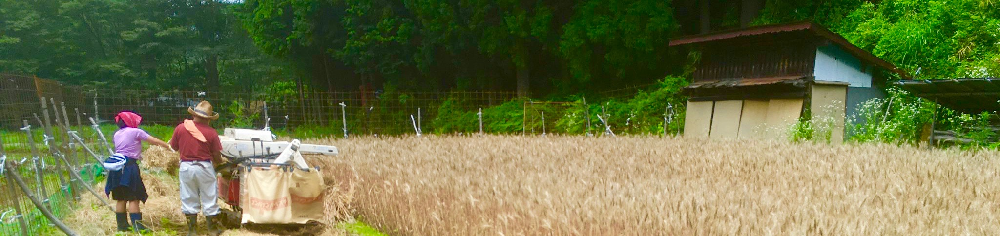

農-Agriculture-
田畑は祖父から受け継いだものである。それを今の世代なりに楽しく使いたい！まずは、パンに使ってみる。パンに使う（店で売る）食材を自家栽培をすることは、「素材から考える」ことだしそれは「自然に向き合う」ことなんだと思う。
その様子をまとめました。主軸は小麦、ジャガイモ、玉ねぎなど保存できる作物、果樹では栗です。あとは、自分たちのために米や白菜などなど、、、
農-Agriculture-NO.1 2020/09/13/Sat(曇) 1年目で栗に実が！！

栗の木は祖父が植えて欲しいと言っていたので植えた。栗の実も保存が効き、樹木自体もタフで、手入れも少ないので植えた。建築資材としても水に強く、基礎に使用される。
生活に重要な役割を持っている木だ！品種はポロタンとポロスケ、各10本を植えた。この品種は皮が剥きやすく渋皮も取れやすい新しい品種である。栗は別品種を混ぜないと実をならさない。苗木の購入は2019年11月で、現場が山奥のため、麓の畑に仮植えをし、冬の間に現場の観察（主に日当たり、霜の降り具合）、マサ（田圃の水を
遮る層）の破壊を行い、春に移植を行った。移植後は梅雨入りまで根を定着させるために三日に一回ほど水やりを行った。その中で栗は沢山の虫を呼び寄せるようで、蜂、ハエ、蝶、蛾、カナブン、ナナフシなど沢山の虫が
集まってきた。夕立時にびしょ濡れになりながら見に行くと、虫が雨宿りをしていたり、芋虫にも草食と肉食がいて芋虫を別の芋虫が食べていた。僕は木の周りでは小さな生態系があるようにも見えた。
これは木が生き物の中心にあるように見えた。そして葉っぱを沢山食べられたので、なんども虫を潰しに行った。何度も店と往復するのは大変だったので、防虫剤（エルサン乳剤）を散布（栗への使用が許可されているもの）
。が、虫がいなくなって、なんか寂しくなった、、、虫がいない木は不自然な気もした（笑）。移植１年目で実はならないはずだったが、全体で20個ほど実がなった！！栽培のアドバイスをしてくれる県の技師方も
驚いていた！見にいく度に驚かされるのが楽しみである。今年の収穫が楽しみである。